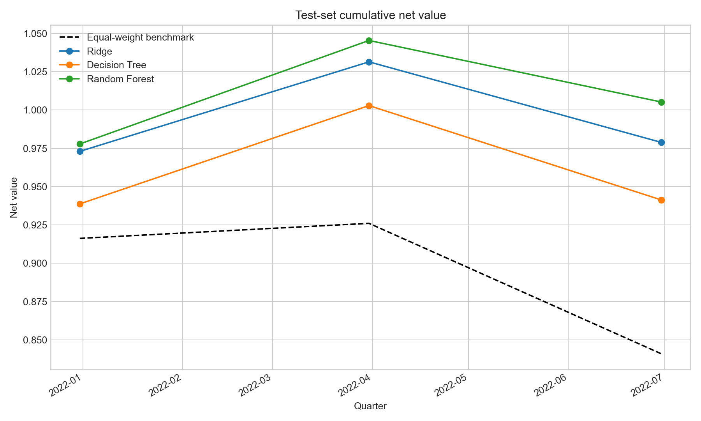
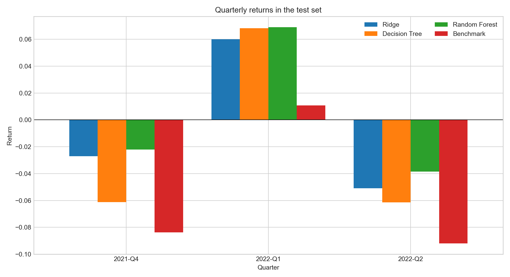
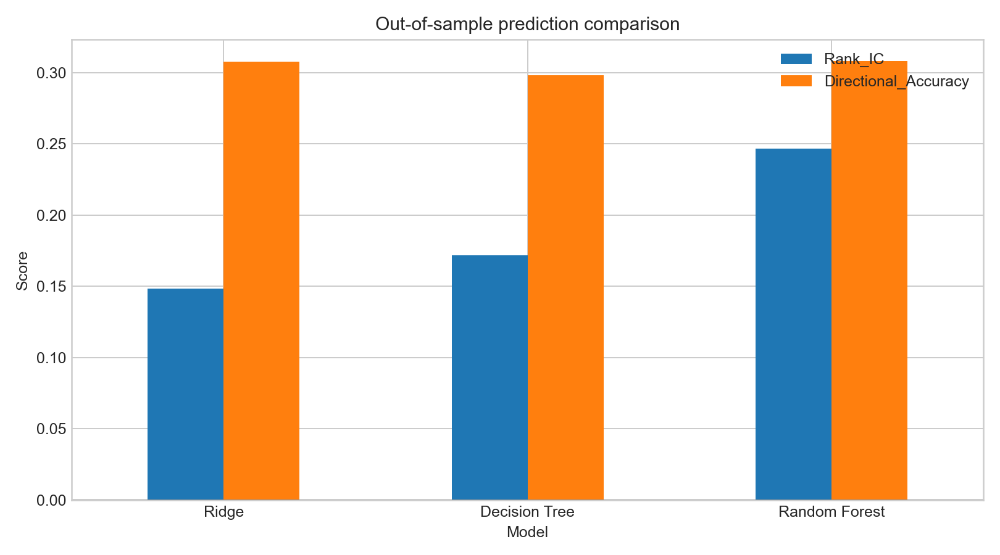

本页面展示课程研究和历史回测结果，不构成任何投资建议或收益承诺。
研究设计
严格按时间划分完整季度，避免随机切分导致未来信息进入训练集。
变量与模型
- 自变量包括估值、市值、盈利成长、资产成长和现金流增长等基本面因子。
- 衍生盈利收益率、账面市值比、销售收益率及成长复合指标。
- 应变量为样本日期之后一个季度的个股收益率 Next_Ret。
- 比较岭回归、单棵决策树和 300 棵树组成的随机森林。
交易规则
- 前 7 个季度训练，后 3 个季度作为完全时间外测试集。
- 每季度选择预测收益排名最高的 20% 股票并等权持有。
- 根据相邻季度持仓变化计算换手率，并扣除 0.1% 交易成本。
- 以测试季度全市场股票等权收益作为基准。
模型预测效果
收益绝对值难以精确预测，选股策略更重视截面排序能力。
| 模型 | MAE | RMSE | R² | Rank IC | 方向准确率 |
|---|---|---|---|---|---|
| 岭回归 | 0.1866 | 0.2376 | -0.3262 | 0.1483 | 30.75% |
| 决策树 | 0.1914 | 0.2420 | -0.3759 | 0.1716 | 29.82% |
| 随机森林 | 0.1882 | 0.2375 | -0.3249 | 0.2466 | 30.79% |
测试集回测结果
随机森林的累计收益、夏普比率和最大回撤均优于另外两个模型。
| 组合 | 累计收益 | 年化收益 | 年化波动率 | 夏普比率 | 最大回撤 |
|---|---|---|---|---|---|
| 岭回归 | -2.11% | -2.81% | 11.68% | -0.20 | -5.10% |
| 决策树 | -5.87% | -7.75% | 14.98% | -0.48 | -6.14% |
| 随机森林 | 0.52% | 0.70% | 11.59% | 0.10 | -3.84% |
| 全市场等权基准 | -15.91% | -20.63% | 11.41% | -1.93 | -15.91% |
统计图与解读
测试区间较短，结果用于展示研究流程，不代表策略长期稳定有效。



结论与局限
模型复杂度不等于稳定收益，必须坚持时间外验证。
- 随机森林表现最佳，与其最高的 Rank IC 和非线性表达能力一致。
- 三个模型的 R² 都为负，说明金融收益绝对值预测仍然困难。
- 测试集只有 3 个季度，年化收益、夏普比率和胜率的统计稳定性较弱。
- 进一步研究应加入更长历史、真实财报披露日、停牌涨跌停约束及滚动训练。
相关文件
报告、代码、模型输出、图表和正式提交 PDF 均可复查。